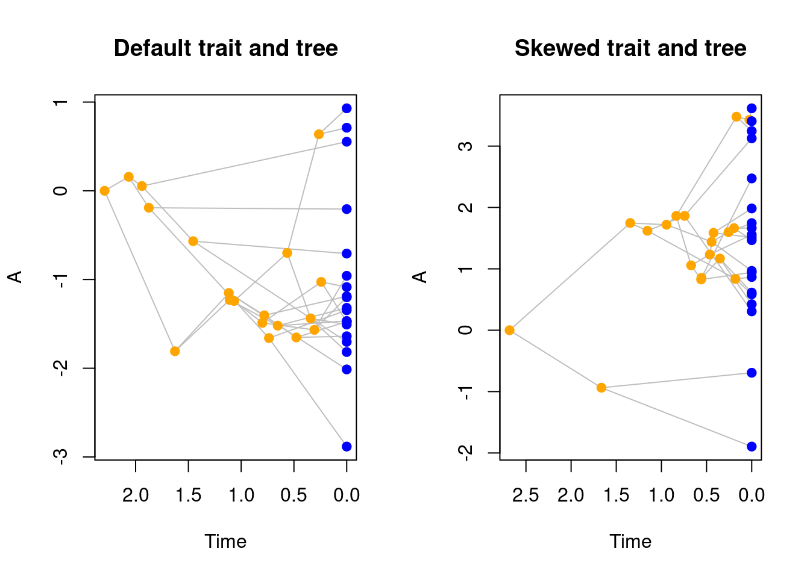

4 Modifying the birth-death process
"modifiers" have a similar structure than "traits" where you can design an object with increasing complexity, starting with the simplest modifiers that doesn’t modify anything (using the default arguments):
## Making a default modifier (no modification)
my_default_modifiers <- make.modifiers()
my_default_modifiers## ---- treats modifiers object ----
## No modifiers applied to the branch length, selection and speciation processes (default).Similarly to "traits" objects, "modifiers" are also printed by default using print.treats.
You can see details about what’s actually in the object using print.treats(my_default_modifiers, all = TRUE).
However, contrary to "traits", you cannot plot "modifiers".
make.modifiers: The three main inputs to make modifiers are functions to modify the branch.length (waiting) process controlling the “growth” of the tree; the selection (selecting) process controlling the selection of the tip on which to apply speciation or extinction; and the speciation (speciating) process controlling whether the select tip goes extinct or speciates. The allowed arguments are detailed here.
4.1 The default modifier (how the process is working)
The modifiers modify the core of the birth-death process as implemented in treats.
By default, the birth-death process in treats uses this modifier:
## What is actually in the default modifier?
print(make.modifiers(), all = TRUE)## $waiting
## $waiting$fun
## function (bd.params, lineage = NULL, trait.values = NULL, modify.fun = NULL)
## {
## return(rexp(1, sum(lineage$n * (bd.params$speciation + bd.params$extinction))))
## }
## <bytecode: 0x55c09a7d04a0>
## <environment: namespace:treats>
##
## $waiting$internal
## NULL
##
##
## $selecting
## $selecting$fun
## function (bd.params, lineage = NULL, trait.values = NULL, modify.fun = NULL)
## {
## return(sample(lineage$n, 1))
## }
## <bytecode: 0x55c09a7cd588>
## <environment: namespace:treats>
##
## $selecting$internal
## NULL
##
##
## $speciating
## $speciating$fun
## function (bd.params, lineage = NULL, trait.values = NULL, modify.fun = NULL)
## {
## return(runif(1) < (bd.params$speciation/(bd.params$speciation +
## bd.params$extinction)))
## }
## <bytecode: 0x55c09a7ce0b0>
## <environment: namespace:treats>
##
## $speciating$internal
## NULL
##
##
## $call
## $call$waiting
## $call$waiting$fun
## [1] "default"
##
##
## $call$selecting
## $call$selecting$fun
## [1] "default"
##
##
## $call$speciating
## $call$speciating$fun
## [1] "default"This contains a lot of information, much of it is actually not useful for using the modular aspects of treats at a high user level, i.e. unless you want to code very specific things, you won’t need most of the information. The essentials are these three functions in the elements named "waiting$fun", "selecting$fun" and "speciating$fun":
"waiting$fun"is the branch length function (defined in detail below) which returns a randomly drawn number from an exponential distribution with the rate of the number of taxa multiplied by the speciation and extinction rate: \(n \times (\lambda + \mu)\) (here is uses the extra functionsumfor internal modularity reasons). This function is responsible for the growth of the length/age of the tree
rexp(1, sum(lineage$n * (bd.params$speciation + bd.params$extinction)))With lineage$n being the number of lineages and bd.params$speciation and bd.params$extinction the speciation and extinction parameters (these specific terms are defined in detail below).
"selecting$fun"is the selection function (defined in detail below) which, after the waiting time defined above returns a randomly selected lineage (a tip) among the existing ones. This function is responsible for the branch selection.
sample(lineage$n, 1)"speciating$fun"is the speciation function (defined in detail below) which randomly draws a number (runif(1)) and depending on the speciation and extinction parameters makes the selected lineage (from 2.) speciate (TRUE) or go extinct (FALSE). This function is responsible for the speciation or extinction of species.
runif(1) < (bd.params$speciation/(bd.params$speciation + bd.params$extinction))We will have a look at all these aspects below in more detail which should make things clearer (but you can always refer to the default here for information).
4.2 The branch length function (branch.length)
The first argument in "modifiers" is the branch length function (branch.length) this is the function that will be executed in treats to generate branch lengths.
Note that in the treats algorithm, branch length is not generated directly but as the result of the waiting time.
In other words, the branch.length function just affects waiting time for all taxa present at any time in the simulation.
These taxa can then either go extinct (stopping the “growth” of its branch length) or survive (continuing the “growth”).
By default, branch length (or waiting/growth) is a randomly drawn number from an exponential distribution with the rate of the number of taxa multiplied by the speciation and extinction rate: \(n \times (\lambda + \mu)\) (where \(n\) is the number of taxa currently present in the simulation, \(\lambda\) and \(\mu\) are respectively the speciation and extinction rates).
This default function is simply called branch.length in treats and can be used as a modifier as follows:
## Specifying the default modifier
default_modifiers <- make.modifiers(branch.length = branch.length)
## Setting some parameters for generating trees
bd_params <- list(extinction = 0)
stop_rule <- list(max.living = 20)
## Generating a tree with the default branch length parameter
set.seed(0)
default_tree <- treats(bd.params = bd_params,
stop.rule = stop_rule,
modifiers = default_modifiers)Of course, the point of the modularity here is that you can provide your own function for generating branch length.
For example, we might be interested in what our tree would look like if we use a simple constant branch length generation (instead of randomly drawing it from an exponential distribution).
We can do so by declaring our own branch.length function and adding it to a "modifiers" object.
## A constant branch length generator
## (note that the output must be numeric, not integer)
constant.brlen <- function() {
return(as.numeric(1))
}
## Creating the modifiers object
constant_modifier <- make.modifiers(branch.length = constant.brlen)
## Generating a new tree with this modifier
set.seed(0)
modified_tree <- treats(bd.params = bd_params,
stop.rule = stop_rule,
modifiers = constant_modifier)And we can visualise the difference between both resulting trees:
par(mfrow = c(1,2))
plot(default_tree, main = "Default modifier")
plot(modified_tree, main = "Constant branch length\nmodifier")
par(mfrow = c(1,1))It is of course possible to use more complex branch length modifiers that take different conditions and specific modification rather than simply always outputing a value of one.
4.2.1 The modifier arguments
You can create a function for branch.length, selection and speciation that involve any of the following arguments:
bd.params: a named list containing"numeric"values that contains the birth-death parameters (at least"speciation"and"extinction");lineage: a named list containing the lineage data (see below).trait.values: a"matrix"containing"numeric"values with the trait names as column names and the lineage ID as row numbers (you can use it with the functionparent.traitsto access the trait of the previous node for example).modify.fun: a"list"of named"function"(usually passed throughconditionandmodify).
The lineage list contains the following elements (missing elements are allowed):
lineage$parents: an"integer"vector: the list of parent lineages;lineage$livings: an"integer"vector: the list of lineages still not extinct;lineage$drawn: a single"integer": the ID of the selected lineage; this must be a number in1:lineage$n;lineage$current: a single"integer": the selected lineage (is equal tolineage$livings[lineage$drawn]);lineage$n: a single"integer": the current number of non extinct lineage (is equal tolength(lineage$livings));lineage$split: a"logical"vector: the list of splits for each lineage (TRUE), the number of total tips is equal tosum(!lineage$split).
In general, unless you know what you’re doing, you can ignore most arguments for specific modifiers since they are handled automatically within the treats function.
Therefore any argument can be left undeclared or missing and is always handled internally. For example, if you did not declare lineage$n as a function argument but are using lineage$n in the function, lineage$n will be detected and treated as a current argument automatically as set accordingly within the birth-death process (e.g. lineage$n will be set to the current number of taxa every iteration of the process).
For example, we can create a function that increases branch length proportional to the number of species “alive” at each time of the simulation in a discrete way, i.e. for discrete numbers of taxa, the branch length increases by jumps (ten fold) every five taxa:
## A more complex binned.branch.length function
increasing.brlen <- function(bd.params, lineage) {
## Setting the cumulated birth and death
birth_death <- bd.params$speciation + bd.params$extinction
## Returning branch lengths depending on different number of taxa
if(lineage$n <= 5) {
return(1 * rexp(1, sum(5 * birth_death)))
}
if(lineage$n <= 10) {
return(10 * rexp(1, sum(10 * birth_death)))
}
if(lineage$n <= 15) {
return(100 * rexp(1, sum(15 * birth_death)))
}
if(lineage$n <= 20) {
return(1000 * rexp(1, sum(20 * birth_death)))
} else {
return(1000 * rexp(1, sum(lineage$n * birth_death)))
}
}We can then create it as a "modifiers" object and run a new simulation:
## Creating a modifiers
increasing_modifier <- make.modifiers(branch.length = increasing.brlen)
## Generating a new tree with this modifier
set.seed(0)
increasing_tree <- treats(bd.params = bd_params,
stop.rule = stop_rule,
modifiers = increasing_modifier)And we can visualise the difference between the resulting trees:
par(mfrow = c(1,3))
plot(default_tree, main = "Default modifier")
plot(modified_tree, main = "Constant branch length\nmodifier")
plot(increasing_tree, main = "Increasing branch length\nmodifier (binned)")par(mfrow = c(1,1))4.3 The selection function (selection)
The selection function is used in the birth-death process to know which lineage to select when running a speciation (or extinction!) event.
By default, this function randomly selects one taxon that is currently not extinct (using: sample(1:lineage$n, 1)).
Similarly to branch.length, it is possible to modify this part of the birth-death process.
For example, we could simply select the last created lineage to create a “ladder” or most asymmetric tree:
## Our function to always select the last taxon
## (making sure it returns an integer)
select.last <- function(lineage) {
return(as.integer(lineage$n))
}Note that here the function can only take the allowed arguments as described above (here
lineage$n: the number of current living taxa).
We can then create a "modifiers" object the same way as before this time using the selection argument:
## A modifier for selection
ladderised_modifier <- make.modifiers(selection = select.last)
## Generating a new tree with this modifier
set.seed(0)
ladderised_tree <- treats(bd.params = bd_params,
stop.rule = stop_rule,
modifiers = ladderised_modifier)
## Displaying the results
par(mfrow = c(1,2))
plot(default_tree, main = "Default modifier")
plot(ladderised_tree, main = "Ladderising modifier")par(mfrow = c(1,1))Again, it is of course possible to make the modifier more complex and in combination with other elements of the tree.
For example, we can create a "treats" object that also generates a BM trait and add to it this object a selection modifier that only selects tips with positive trait values (only species with positive trait values will speciate).
## Our function that only select taxa with positive trait values
select.positive <- function(trait.values, lineage) {
## Selecting the taxa names with positive values for the first trait
positives <- as.integer(rownames(trait.values)[which(trait.values[, 1] >= 0)])
## Combine the descendants of the current lineages (lineage$parents)
## with the species that have speciated (seq_along(lineages$split))
## to have a table of pairs of parents/splits
parents_split_table <- cbind(lineage$parents, seq_along(lineage$split))
## Select the current taxa that descend from a node with a positive value
positive_living <- parents_split_table[which(lineage$parents %in% positives), 2]
## Select one tip randomly in the ones with descendants with positive values
return(sample(which(lineage$livings %in% positive_living), 1))
}
## Creating the modifier
positive_skew <- make.modifiers(selection = select.positive)
## Creating a (default) trait object
BM_trait <- make.traits()
## Simulate a tree and trait with no modifier
set.seed(1)
default_treats <- treats(bd.params = bd_params,
stop.rule = stop_rule,
traits = BM_trait)
## Simulate a tree and trait with the modifier
set.seed(1)
skewed_trait_treats <- treats(bd.params = bd_params,
stop.rule = stop_rule,
traits = BM_trait,
modifiers = positive_skew)
## Plotting the differences in trees and traits
par(mfrow = c(1, 2))
plot(default_treats, main = "Default trait and tree")
plot(skewed_trait_treats, main = "Skewed trait and tree")
4.4 The speciation function (speciation)
The third function that can be used to modify the birth-death process is the speciation function.
This one is used during the birth-death process to decide whether a lineage speciates (creating a node and two new lineages) or goes extinct (creating a tip).
Note that the
speciationfunction only affects tips or nodes before the simulation reaches thestop.rule. The then surviving lineages are all automatically transformed into tips.
By default, the speciation function is trigger a speciation even if a number randomly drawn from a uniform distribution is lower than the ratio between the speciation and the speciation and extinction parameter. If the randomly drawn number is higher, the lineage goes extinct.
## The speciation in pseudo-code:
runif(1) < speciation/ (speciation + extinction)Creating "modifiers" with a speciation function works the same way as for branch.length and selection but the function that will be used needs to output a logical value (see table below).
Once the function is created simply input your function for speciation in the modifier and run the treats function with that modifier:
## Speciating or going extinct randomly
## (regardless of the extinction parameter)
random.extinct <- function() {
return(sample(c(TRUE, FALSE), 1))
}
## Creating the modifiers object
random_extinction <- make.modifiers(speciation = random.extinct)
## Generating a new tree with this modifier
set.seed(2)
modified_tree <- treats(bd.params = bd_params,
stop.rule = stop_rule,
modifiers = random_extinction)
par(mfrow = c(1,2))
plot(default_tree, main = "Default modifier")
plot(modified_tree, main = "Random extinction\nmodifier")
par(mfrow = c(1,1))Note how loads of lineages go extinct even if the extinction parameter is set to 0!
And again, we can make some more advanced modifiers: for example, one where a tip always goes extinct if their ancestor has a negative trait value. Here we will also introduce the utility function parent.trait that automatically selects the trait values of the parent of the current lineage.
## A modifier for removing tips with negative values
modify.trait <- function(trait.values, lineage) {
if(parent.traits(trait.values, lineage) < 0) {
## Go extinct!
return(FALSE)
} else {
## Speciate!
return(TRUE)
}
}
## Creating the modifier
modified_trait <- make.modifiers(speciation = modify.trait)
## Simulate a tree and trait with the modifier
set.seed(1)
modified_trait_treats <- treats(bd.params = bd_params,
stop.rule = stop_rule,
traits = BM_trait,
modifiers = modified_trait)
## Plotting the differences in trees and traits
par(mfrow = c(1, 2))
plot(default_treats, main = "Default trait and tree")
plot(modified_trait_treats, main = "Biased trait and tree")4.5 Summary of the inputs and outputs for the branch.length, selection and speciation modifiers
| modifier name | accepted input (arguments) | required output (class) |
|---|---|---|
branch.length |
bd.params, lineage, trait.values |
"numeric" |
selection |
bd.params, lineage, trait.values |
"integer" |
speciation |
bd.params, lineage, trait.values |
"logical" |
4.6 The condition and modify functions (condition and modify)
In the examples above, we have seen how to specify modifications to the birth-death process (via branch.length, selection and speciation), however, these modifications are not dynamic.
In other words, throughout the process, the modifications remain constant (even if they are conditional).
It is however, possible to code the "modifiers" so that they can be affected by "events" objects (see next chapter on events).
To do so, you can formally declare conditions (condition) and modifications (modify) as internal functions that can then be modified by an "events" object.
condition and modify are hard coded in the branch.length function that they concern, i.e. they are variables (functions) within the function.
For example in the speciation part of a modifier, the default is to trigger an event from a uniform distribution and then check if that value is smaller than (\[speciation/(speciation + extinction)\]):
## The default speciation algorithm
speciation <- function(bd.params) {
## Randomly trigger an event
trigger_event <- runif(1)
## Speciate?
return(trigger_event < (bd.params$speciation/
(bd.params$speciation + bd.params$extinction)))
}It is possible with some specific conditions to modify this trigger by providing a condition and modify function to the speciation function.
That is, if the condition is met, apply the modify function to the algorithm.
For example here we can edit the default speciation function to have a modification (modify = double.the.trigger: doubling the trigger value) happening half the time (condition = half.the.time):
## A conditional function that triggers half the time
half.the.time <- function() return(sample(c(TRUE, FALSE), 1))
## A modification that doubles the value to trigger the event
double.the.trigger <- function(x) return(x*2)
## A conditional modifier
make.modifiers(speciation = speciation,
condition = half.the.time,
modify = double.the.trigger)## ---- treats modifiers object ----
## Default branch length process.
## Default selection process.
## Speciation process is set to speciation with a condition (half.the.time) and a modifier (double.the.trigger).Effectively, this will internally modify the speciation function as follows:
## The default speciation algorithm
speciation <- function(bd.params) {
## Randomly trigger an event
trigger_event <- runif(1)
## Modify the triggering
if(half.the.time()) { ## This running the half.the.time function drawing TRUE or FALSE randomly
trigger_event <- double.the.trigger(trigger_event) ## This will double the random value trigger_event
}
## Speciate?
return(trigger_event < (bd.params$speciation/
(bd.params$speciation + bd.params$extinction)))
}These condition and modify functions can be applied to all the modifiers elements (selection, branch.length and speciation).
However, they are typically used in events that will modify the modifiers (see the events section)!
## This build of rgl does not include OpenGL functions. Use
## rglwidget() to display results, e.g. via options(rgl.printRglwidget = TRUE).